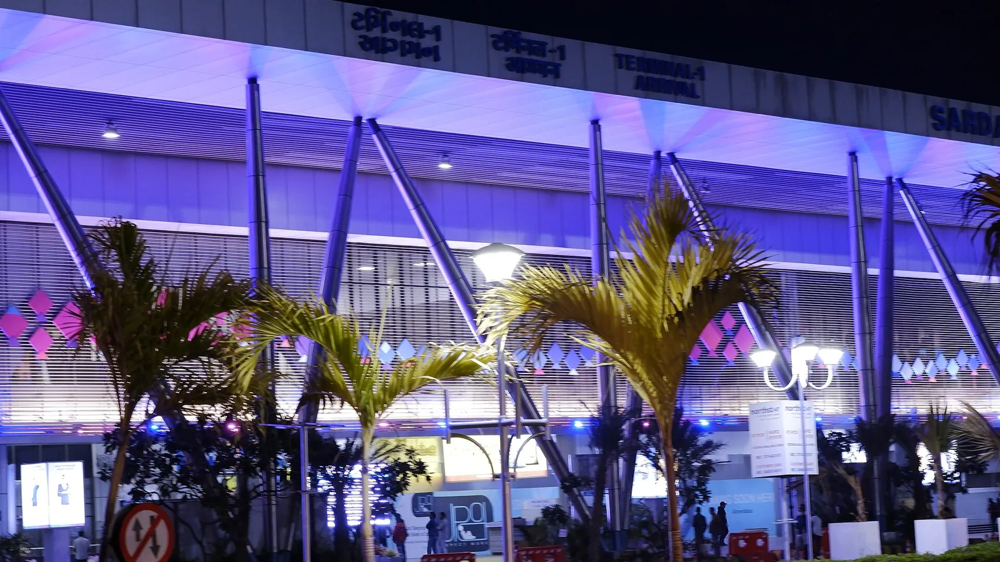
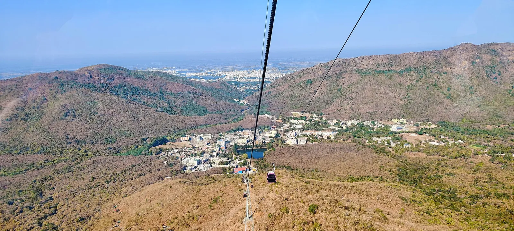
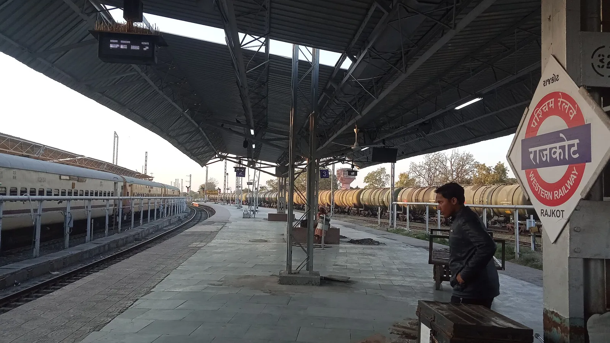
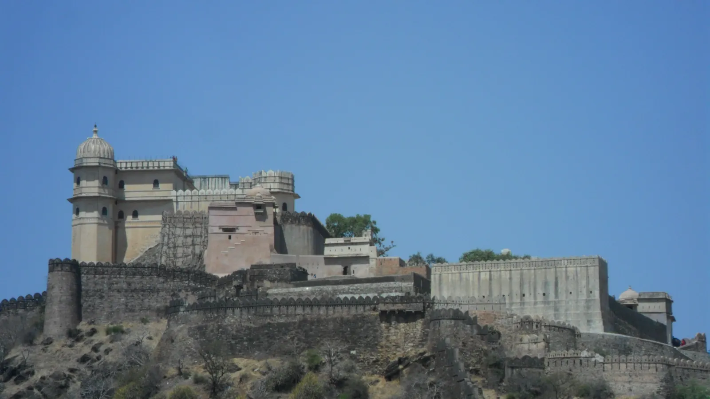
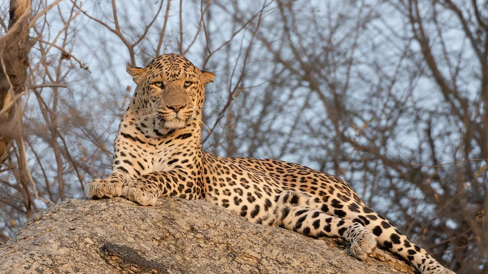
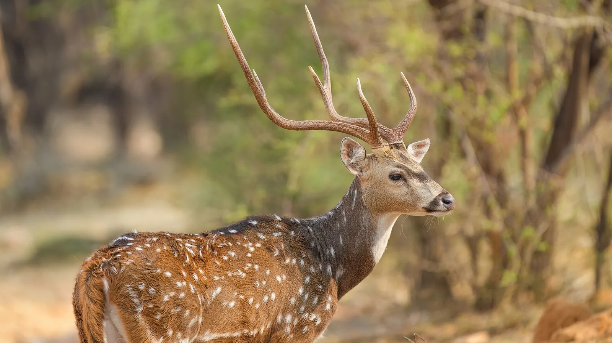
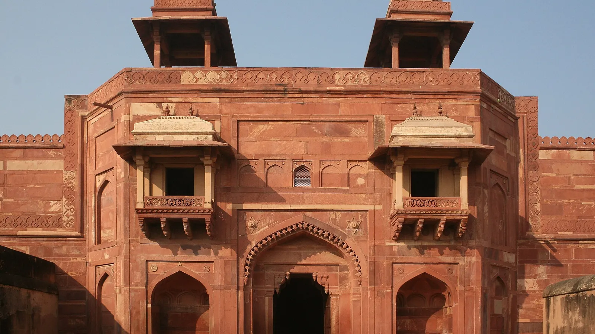
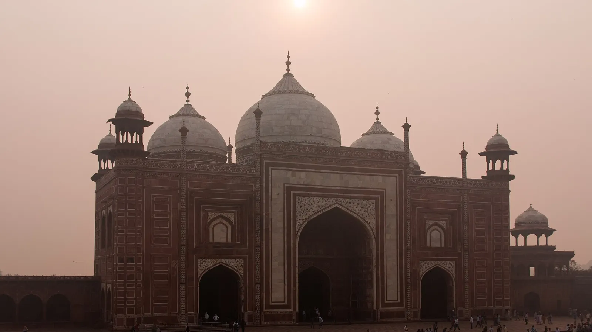
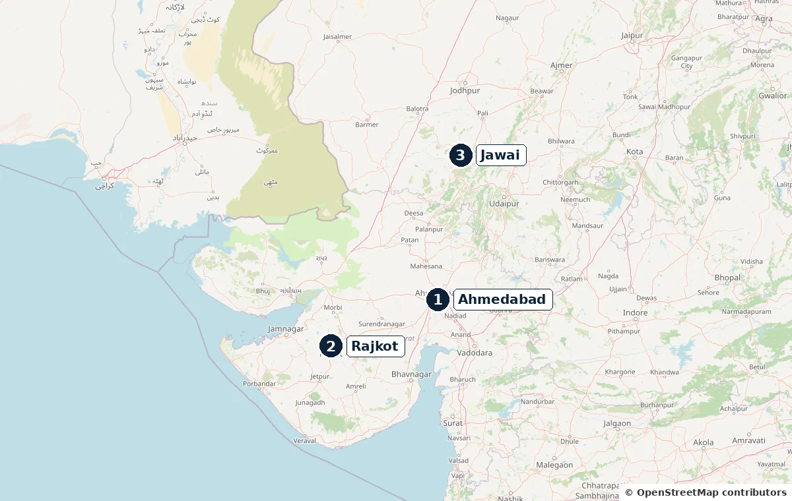

Three big cats in twelve days. Gir is the last home of the Asiatic lion, Jawai's granite hills are leopard country, and Ranthambore's tigers hunt around a 10th-century fort. Between the safaris come Girnar's temples, Somnath, Gandhi's birthplace at Porbandar, Dwarka, the great wall of Kumbhalgarh and the Taj Mahal at sunrise. We added one night to the original plan and moved some stops: Rajkot to Kumbhalgarh (about 520 km) and Ranthambore to Delhi via Agra and Fatehpur Sikri were each too long for one day. We also corrected Kumbhalgarh's palace: it is the Badal Mahal, not a Hawa Mahal.
See it for yourself
Photos from the journey











Where you go
The journey on one map

AhmedabadJunagadhSasan GirSomnathPorbandarDwarkaRajkotAhmedabadKumbhalgarhJawaiRanthamboreAgraDelhi
Day by day, in short
Daily travel brief
Distances are by road for the whole day. The full plan with timings comes with your detailed itinerary.
-
1
Arrive in Ahmedabad
- Gujarat is a dry state: alcohol needs a permit, which hotels issue to visitors.
-
2
Girnar by ropeway and on to Sasan Gir
- Girnar ropeway: the ropeway stops in high wind.
- A long day: this is the price of seeing Girnar.
-
3
Lion safari in Gir and the Somnath aarti
- Gir National Park jeep safari: permits are booked online in advance in your passport or ID name.
- Gir National Park jeep safari: stay seated and silent in the jeep; never step out.
- Somnath temple: phones, cameras and bags are not allowed inside; use the locker.
-
4
Porbandar and the drive to Dwarka
- Dwarkadhish temple: phones and cameras are not allowed inside.
- Dress modestly for the temples.
-
5
Bet Dwarka and on to Rajkot
- Scuba or snorkelling at Shivrajpur beach: dives run only when the sea is calm, usually October to May.
- Rajkot is our home town.
-
6
Kathiyawadi breakfast and the train to Ahmedabad
- We added this night: Rajkot to Kumbhalgarh is about 10 hours by road.
-
7
Up into the Aravallis to Kumbhalgarh
- Kumbhalgarh Fort and Badal Mahal: a steep walk to Badal Mahal.
- The fort is beautiful at sunset from the walls.
-
8
Leopards of Jawai
- Leopard safari: safaris are run by the camps, not the forest department.
- The original plan placed this in Jalore.
-
9
The long drive to Ranthambore
- This is the longest drive of the tour.
-
10
Tigers of Ranthambore
- Ranthambore jeep safari: book online up to 90 days ahead.
- Wear earth colours on safari and carry a scarf for the dust.
-
11
Fatehpur Sikri and Agra
- Fatehpur Sikri: use only the official guides; touts are persistent at the gate.
- Tomorrow's sunrise visit starts at about 06:00.
-
12
The Taj Mahal at sunrise, then Delhi
- Taj Mahal at sunrise: closed on Fridays.
- Train or drive to Delhi: book flights from Delhi after about 21:00.
Local know-how
Travel hacks from our desk
UPI, cards and cash
UPI works almost everywhere, even at small stalls. Keep some cash in INR 100 and 200 notes for temples, parking, tips and places where the network is weak.
Temple and shrine etiquette
Cover shoulders and knees. Remove shoes where asked, and carry socks for hot stone floors. Leather belts and bags are not allowed inside some Jain and Hindu temples. Ask before photographing people and inside shrines.
Water and street food
Drink sealed bottled or filtered water only. Choose busy stalls where food is cooked in front of you, and skip cut fruit and ice from roadside stalls.
Driving times
Indian roads are slower than the kilometres suggest: plan on 40 to 50 km an hour on highways and much less in hills and towns. Your driver's breaks and meal stops are built into the timings.
Plugs and tipping
Plugs are Indian three-pin and two-pin, 230 volts. Tipping drivers and guides about INR 300 to 500 a day is appreciated.
When to go
Best time to visit for this journey
February and March: parks open, warm days and good wildlife sightings.
November to March, when the parks are open and the weather is comfortable. Gir closes from 16 June to 15 October and Ranthambore's core zones from 1 July to 30 September. April to June is hot but best for tiger sightings at water holes.
The package
What's included
Included
- 11 nights with breakfast
- Private car with driver throughout, with airport transfers
- Rajkot to Ahmedabad train
- One Gir and one Ranthambore safari, one Jawai leopard safari
- Guided city tours in your language
- A local SIM card for each traveller
- 24/7 support from Blue Diamond Voyage
Not included
- International flights and India e-Visa
- Extra safaris and camera fees
- Girnar ropeway and monument entry fees
- Scuba diving
- Meals not marked included
- Travel insurance
The detailed itinerary
Some journeys are planned. Ours are crafted.
The full 12-day plan is ready: hour-by-hour timings, drive times, temple dress codes, food for your diet and a route map for every day. Tell us your dates and your city, and we'll send it to you on WhatsApp, shaped around you.
- Hour-by-hour timings
- A route map for every day
- Hotel and room details
- Visa and entry steps
- Vegetarian and Jain dining
24/7 travel desk+91 97148 59797+91 98242 21400
Photo and map credits
- Sardar Vallabhbhai Patel International Airport: Apurba Biswas, CC0, via Wikimedia Commons
- Girnar Ropeway: Piyush Jnd, CC BY-SA 4.0, via Wikimedia Commons
- Kirti Mandir Porbandar: VasuVR, CC BY-SA 4.0, via Wikimedia Commons
- Bet Dwarka: VasuVR, CC BY-SA 4.0, via Wikimedia Commons
- Rajkot Junction: Sumita Roy Dutta, CC BY-SA 4.0, via Wikimedia Commons
- Kumbhalgarh Fort: Bhawana Gururani, CC BY-SA 4.0, via Wikimedia Commons
- Jawai Bandh: Tisha Mukherjee, CC BY-SA 4.0, via Wikimedia Commons
- Jawai: Tisha Mukherjee, CC BY-SA 4.0, via Wikimedia Commons
- Ranthambore National Park: Giles Laurent, CC BY-SA 4.0, via Wikimedia Commons
- Fatehpur Sikri: Diego Delso, CC BY-SA 4.0, via Wikimedia Commons
- Taj Mahal East Gate: Daniel VILLAFRUELA, CC BY-SA 3.0, via Wikimedia Commons
- Maps: © OpenStreetMap contributors; road routes by OSRM.